subroutine RediTensor(Temp,Salt,Kredigm,K31,K32,K33, nIter,DumpFlag)
|---in--| |-------out-------|
! Input
real Temp(Nx,Ny,Nz) ! Potential temperature
real Salt(Nx,Ny,Nz) ! Salinity
! Output
real Kredigm(Nx,Ny,Nz) ! Redi/GM eddy coefficient
real K31(Nx,Ny,Nz) ! Redi/GM (3,1) tensor component
real K32(Nx,Ny,Nz) ! Redi/GM (3,2) tensor component
real K33(Nx,Ny,Nz) ! Redi/GM (3,3) tensor component
! Auxiliary input
integer nIter ! interation/time-step number
logical DumpFlag ! flag to indicate routine should ``dump''
The subroutine RediTensor() is called from model() with
input arguments 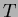 and  . It returns the 3D-arrays Kredigm,
K31, K32 and K33 which represent
. It returns the 3D-arrays Kredigm,
K31, K32 and K33 which represent  (at
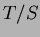 points) and the three components of the bottom row in the
Redi/GM tensor; 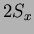, 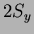 and 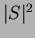 respectively, all at 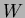
points.
(at
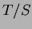 points) and the three components of the bottom row in the
Redi/GM tensor; 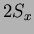, 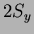 and 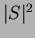 respectively, all at 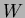
points.
The discretisations and algorithm within RediTensor() are as
follows. The routine first calculates the locally reference potential
density 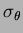 from and  and calculates the potential
density gradients in subroutine gradSigma():
and calculates the potential
density gradients in subroutine gradSigma():
| Array | Grid-point | Definition |
| SigX | U | 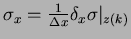 |
| SigY | V | 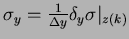 |
| SigZ | W | 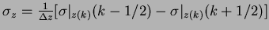 |
Note that  is the static stability because the potential
densities are referenced to the same reference level (-level).
is the static stability because the potential
densities are referenced to the same reference level (-level).
The next step calculates the three tensor components K13, K23 and K33 in subroutine KtensorWface(). First, the
lateral gradients  and 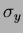 are interpolated to the
points and stored in intermediate variables:
and 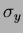 are interpolated to the
points and stored in intermediate variables:
Finally, Kredigm ( ) is calculated in subroutine
GMRediCoefficient(). First, all the gradients are interpolated
to the points and stored in intermediate variables:
) is calculated in subroutine
GMRediCoefficient(). First, all the gradients are interpolated
to the points and stored in intermediate variables: